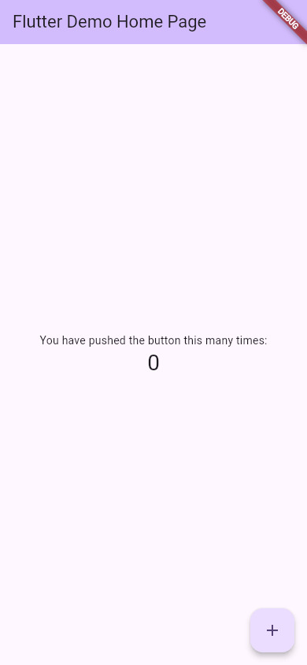

Rodando o App (flutter run)
O projeto está criado, o código está em lib/main.dart. Falta o momento mais gostoso: ver o app aberto. O comando flutter run compila o projeto, instala o app no aparelho escolhido (um emulador, o seu celular, o Chrome, o próprio computador) e fica ligado nele, esperando as suas ordens pelo teclado. É ele que os editores usam quando você aperta F5.
- A rodar o app com
flutter run, de dentro da pasta do projeto. - A escolher o aparelho com
-d. - O que é o modo debug e a faixa DEBUG no canto da tela.
- As teclas do
flutter run: r, R, h, d, c e q. - Os erros mais comuns ao rodar, com as mensagens reais.
Os comandos desta aula foram rodados na máquina da Ana (Flutter 3.47.7), nos projetos da aula Criando um Projeto. A máquina dela não tem emulador nem Chrome (aula flutter doctor); por isso, o app rodou no aparelho web-server, que serve o app para qualquer navegador. Com um emulador ou celular, a saída é parecida, com o nome do aparelho no lugar; esses casos estão marcados como ilustrativos.
A ideia: o forno com a porta de vidro
Pense num bolo no forno com porta de vidro. Você põe a massa (o código), liga o forno (compila) e fica olhando o bolo crescer (o app aberto). Se quiser um ajuste, não precisa começar outro bolo: abre a porta, põe uma cobertura e fecha (o hot reload). Quando terminar, desliga o forno (q).
O flutter run é esse forno: ele não roda o app e vai embora; ele fica conectado ao app, mostrando as mensagens (os print, os erros) e aceitando comandos enquanto o app está aberto.
1. O primeiro flutter run
Dentro da pasta do projeto, escolhendo o aparelho web-server e a porta 8080:
$ cd receitas_da_ana $ flutter run -d web-server --web-port 8080 Launching lib/main.dart on Web Server in debug mode... Waiting for connection from debug service on Web Server... 25,5s lib/main.dart is being served at http://localhost:8080 The web-server device requires the Dart Debug Chrome extension for debugging. Consider using the Chrome or Edge devices for an improved development workflow. Flutter run key commands. r Hot reload. 🔥🔥🔥 R Hot restart. h List all available interactive commands. d Detach (terminate "flutter run" but leave application running). c Clear the screen q Quit (terminate the application on the device).
- -d web-server
- O aparelho (de device) em que o app vai rodar. Aqui, um servidor web local.
- --web-port 8080
- A porta do servidor. Sem ela, o Flutter escolhe uma ao acaso.
- Launching lib/main.dart on Web Server in debug mode...
- "Lançando o
lib/main.dartno Web Server em modo debug". O ponto de partida é sempre olib/main.dart. - Waiting for connection ... 25,5s
- A compilação. Na primeira vez demora (aqui, 25,5 segundos; num emulador Android, a primeira compilação costuma levar bem mais). As próximas são mais rápidas.
- lib/main.dart is being served at http://localhost:8080
- "Está sendo servido em
http://localhost:8080": abrindo esse endereço num navegador da mesma máquina, aparece o app. - The web-server device requires the Dart Debug Chrome extension ...
- Um aviso: para depurar pelo navegador, este aparelho precisa de uma extensão do Chrome; o Flutter recomenda os aparelhos
chromeouedge, que abrem o navegador sozinhos. - Flutter run key commands.
- "Comandos de teclado do
flutter run". O terminal fica esperando: o comando não termina enquanto o app estiver aberto. As teclas estão na seção 3.
O que aparece no navegador é o contador do flutter create:

Com um emulador Android aberto ou um celular ligado no cabo (aula VS Code e Android Studio), basta flutter run: o Flutter compila um app Android de verdade (a primeira vez demora alguns minutos, porque o Gradle baixa o que precisa), instala no aparelho e abre. Se houver mais de um aparelho, ele pergunta qual usar.
2. Escolhendo o aparelho: -d
Sem -d, o Flutter usa o único aparelho disponível ou pergunta qual. Na máquina da Ana, o único aparelho "de verdade" é o próprio computador como programa de Linux (o flutter devices da aula flutter doctor). Com -d, você escolhe pelo id (a segunda coluna do flutter devices) ou por um pedaço do nome:
| Comando | Onde roda |
|---|---|
flutter run | No aparelho disponível (ou pergunta, se houver vários) |
flutter run -d chrome | Abre o Chrome com o app (precisa do Chrome instalado) |
flutter run -d emulator-5554 | No emulador Android com esse id (ilustrativo) |
flutter run -d linux / windows / macos | Como programa de computador (precisa das ferramentas do sistema) |
flutter run -d web-server | Serve o app num endereço local, para qualquer navegador |
flutter run -d all | Em todos os aparelhos ao mesmo tempo |
3. As teclas do flutter run
Com o app rodando, o terminal aceita uma tecla de cada vez (sem Enter):
- r — Hot reload 🔥
- "Recarga a quente": aplica no app aberto as mudanças que você salvou no código, em menos de um segundo, sem perder o estado (o contador continua no número em que estava). A grande estrela do Flutter: aula Hot Reload e Hot Restart.
- R — Hot restart
- "Reinício a quente": recomeça o app do zero com o código novo (o contador volta a 0), mas sem recompilar tudo.
- h — Help
- Lista todas as teclas disponíveis (há outras, para depuração).
- d — Detach
- "Desconectar": encerra o
flutter run, mas deixa o app aberto no aparelho. - c — Clear
- Limpa a tela do terminal.
- q — Quit
- "Sair": fecha o app no aparelho e encerra o
flutter run. Ctrl+C também encerra.
Nos editores, essas teclas viram botões: o raio (hot reload), a seta circular (hot restart) e o quadrado (parar). E salvar o arquivo faz o hot reload sozinho.
4. O modo debug e a faixa DEBUG
O flutter run usa, por padrão, o modo debug ("depuração"): o app é montado para ser fácil de inspecionar e de recarregar, não para ser rápido. Por isso ele é mais lento e maior que o app final, mostra as mensagens de erro na tela e tem a faixa vermelha DEBUG no canto.
| Modo | Comando | Para quê |
|---|---|---|
| debug | flutter run | Desenvolver: hot reload, erros na tela, faixa DEBUG |
| profile | flutter run --profile | Medir o desempenho (só em aparelho de verdade) |
| release | flutter run --release | Ver o app como o usuário verá: rápido, sem faixa e sem hot reload |
A faixa também pode ser escondida no próprio código, com um parâmetro do MaterialApp. Experimente:
Missão: a Ana vai tirar um print da tela para mostrar à mãe e quer sem a faixa DEBUG. Acrescente debugShowCheckedModeBanner: false, dentro do MaterialApp, antes do home.
import 'package:flutter/material.dart';
void main() {
runApp(const MainApp());
}
class MainApp extends StatelessWidget {
const MainApp({super.key});
@override
Widget build(BuildContext context) {
return const MaterialApp(
home: Scaffold(body: Center(child: Text('Lista de compras'))),
);
}
}
import 'package:flutter/material.dart';
void main() {
runApp(const MainApp());
}
class MainApp extends StatelessWidget {
const MainApp({super.key});
@override
Widget build(BuildContext context) {
return const MaterialApp(
debugShowCheckedModeBanner: false,
home: Scaffold(body: Center(child: Text('Lista de compras'))),
);
}
}
O app continua em modo debug (com hot reload e tudo); só a faixa sumiu. O nome do parâmetro quer dizer "mostrar a faixa do modo verificado (debug)".
Formas diferentes de rodar (e qual usar)
| Jeito | Como | Quando usar |
|---|---|---|
| Terminal | flutter run (e r, R, q) | Sempre funciona; mostra todas as mensagens |
| VS Code | F5 (Run › Start Debugging), aparelho na barra de status | O dia a dia: hot reload ao salvar, pontos de parada |
| Android Studio | Botão ▶ ao lado da lista de aparelhos | Igual ao VS Code |
| O editor do guia | Botão Rodar das caixas "Experimente" | Testar trechos sem instalar nada: o app é compilado pelo DartPad, do Google, e precisa de internet (aula O Editor do Guia) |
Quando dá errado
$ cd ~ $ flutter run Error: No pubspec.yaml file found. This command should be run from the root of your Flutter project.
"Erro: nenhum arquivo pubspec.yaml encontrado. Este comando deve ser rodado na raiz do seu projeto Flutter." O Flutter reconhece um projeto pelo pubspec.yaml (aula As Pastas de um Projeto). Como consertar: cd receitas_da_ana e rode de novo.
$ flutter run -d chrome No supported devices found with name or id matching 'chrome'. The following devices were found: Linux (desktop) • linux • linux-x64 • Ubuntu 26.04.1 LTS 7.0.0-15-generic
"Nenhum aparelho com nome ou id chrome. Foram encontrados estes:" e a lista. A máquina da Ana não tem Chrome. Como consertar: instale o que falta (o flutter doctor diz o quê), ou escolha um aparelho da lista.
$ flutter run Launching lib/main.dart on Linux in debug mode... Building Linux application... Error: CMake is required for Linux development. It is likely available from your distribution (e.g.: apt install cmake), or can be downloaded from https://cmake.org/download/
Sem -d, o Flutter escolheu o único aparelho, o Linux, e só na hora de construir o programa percebeu que falta o CMake (o mesmo [✗] Linux toolchain do flutter doctor). Como consertar: instale as ferramentas indicadas, ou rode em outro aparelho com -d.
main.dart
A Ana escreveu Txt no lugar de Text no app da lista de compras:
return const MaterialApp(
home: Scaffold(body: Center(child: Txt('Hello World!'))),
);
$ flutter run -d web-server --web-port 8080
Launching lib/main.dart on Web Server in debug mode...
Waiting for connection from debug service on Web Server...
lib/main.dart:13:42: Error: Not a constant expression.
home: Scaffold(body: Center(child: Txt('Hello World!'))),
^^^
Waiting for connection from debug service on Web Server... 23,6s
Failed to compile application.
- lib/main.dart:13:42:
- O arquivo, a linha 13 e a coluna 42: exatamente onde está o
Txt. - Error: Not a constant expression.
- "Não é uma expressão constante." Curioso: o compilador não reclamou do nome errado, e sim do
const. Tudo o que está dentro deconst MaterialApp(...)precisa ser constante, e oTxt(...), que não é nada conhecido, não pode ser. A mensagem nem sempre diz a causa com todas as letras: leia a linha e o^^^, que apontam o lugar certo. - Failed to compile application.
- "Falha ao compilar o app." Nada abriu.
Como consertar: corrija para Text e rode de novo. Dica: o editor (e o comando flutter analyze) sublinham esse erro antes de você rodar, quase sempre com uma explicação mais clara.
Referência rápida
| Comando ou tecla | O que faz |
|---|---|
flutter run | Compila e roda o app em modo debug, e fica conectado |
flutter run -d ID | Escolhe o aparelho (chrome, linux, web-server, o id do emulador...) |
flutter run --release | Roda o app como ele será entregue |
flutter devices | Lista os aparelhos e os ids |
| r / R | Hot reload / hot restart |
| h | Lista as teclas |
| d | Desconecta e deixa o app aberto |
| c | Limpa o terminal |
| q | Fecha o app e o flutter run |
Exercícios
1. O aparelho
Complete o comando que roda o app no Chrome:
2. A tecla de sair
Que tecla fecha o app e encerra o flutter run?
3. A Ana rodou flutter run e recebeu No pubspec.yaml file found. O que aconteceu?
4. Qual é a diferença entre r e R?
5. Por que o app do flutter run tem a faixa DEBUG?
Resumo
flutter run, dentro da pasta do projeto, compila olib/main.dart, abre o app no aparelho e fica conectado.-descolhe o aparelho pelo id ou nome;flutter devicesmostra a lista.- Teclas: r hot reload, R hot restart, h ajuda, d desconectar, c limpar, q sair.
- O padrão é o modo debug, com a faixa DEBUG;
debugShowCheckedModeBanner: falseesconde a faixa, e--releaseroda o app final. - Erros comuns: fora da pasta (
No pubspec.yaml file found), aparelho inexistente, ferramentas faltando e erro de compilação comarquivo:linha:coluna.